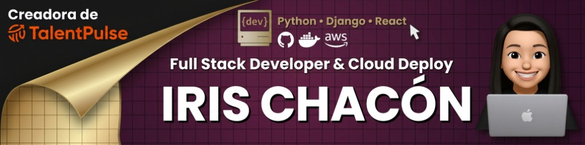

TalentPulse
Mi proyecto final Full Stack con su código fuente, arquitectura backend en Django 5, frontend en React 18 y memoria técnica.
Django 5
React 18
Docker
Render

Desarrolladora Full Stack | Python · Django · React · Docker 💻 🇪🇸
Apasionada del código, la arquitectura backend y la creación de soluciones digitales reales.
¡Hola! Soy Iris ChaCón, una apasionada del código, el aprendizaje continuo y la creación de soluciones digitales. Recientemente he finalizado mi Máster de Desarrollo Web Full Stack (Conquer Blocks · IEAD), este repositorio es el reflejo de mi evolución, proyectos y trayectoria profesional.
En este espacio encontrarás el código fuente de mi sitio web personal, un proyecto vivo donde aplico todo lo que he aprendido: Frontend con buenas prácticas, Backend con Django REST Framework, diseño responsive y accesible, e integración continua y despliegue en cloud.
Mi objetivo es mostrar no solo los resultados finales, sino también mi proceso de aprendizaje, los errores que cometo, soluciono y cómo voy creciendo como desarrolladora.
Completado: ⬤⬤⬤⬤⬤ 100% · 🚀 Proyecto Fin de Máster (APROBADO ✅)
⚡ Dato curioso: Cuando no estoy programando, me encontrarás refactorizando proyectos, explorando nuevas librerías de Python o diseñando la arquitectura del próximo lado. ☕
Plataforma web completa para evaluación 360º y seguimiento de OKRs, con API REST en Django 5 y frontend en React 18 (Vite). Proyecto Fin de Máster — completado y aprobado.
Abierta a oportunidades como Full Stack Developer (Python · Django · React). Especialmente interesada en proyectos de impacto y equipos con cultura técnica sólida en Zaragoza y remoto.
Modelado de base de datos relacional, sistema de autenticación personalizado (CustomUser) y control de accesos basado en roles (RBAC) con Django REST Framework.
Empaquetado de servicios con Docker y puesta en producción en plataformas cloud como Render y Cloudflare Pages.
TalentPulse
Mi proyecto final Full Stack con su código fuente, arquitectura backend en Django 5, frontend en React 18 y memoria técnica.
Aplicaciones Full Stack
Proyectos que integran lógica de negocio en Python/Django con frontends dinámicos en React.
Experimentos
Prototipos y experimentos de código libre explorando nuevas herramientas y librerías.
Prácticas de Despliegue
Configuraciones con Docker, manejo de entornos y despliegue continuo en Cloudflare Pages y Render.
Automatización & Workflows
Desarrollo de scripts de automatización, tareas programadas y optimización del flujo de trabajo de desarrollo.